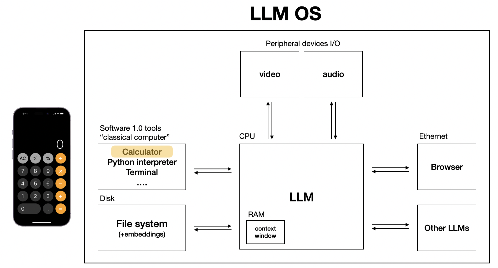

Large Language Models (LLMs) are great writers, but they struggle with numbers: Counting, adding, and basic arithmetic. I guess this is why they are called Large Language Models and not Large Math Models 😉. In this blog post, let’s explore why LLMs struggle with math and how we can fix this. We will dive into the topic of function calling and successfully turn an LLM into a calculator.
Dalle: An LLM with a connected calculator
Why LLMs struggle with math?
What is \(6574 \times 9132\)? The answer is \(60.033.768\), and computers could solve this question easily in their infancy, yet modern LLMs struggle with this question. I asked GPT-3.5 and GPT-4o:
GPT3.5 answered: “6574 multiplied by 9132 equals 60,088,968.” (incorrect)
GTP-4o answered: “The product of 6574 and 9132 is 60,052,968.” (incorrect)
Both results are incorrect. Why is that? The reason is rooted in tokenization [1] and the fact that these numbers are treated like text. Easy tasks like \(3 \times 7\) will most likely always be “calculated” correctly. But they are not really calculated, the LLM just learned the result from the training data. This is the same as when you learned the basic multiplication tables. Essentially, you do not calculate the numbers all the time, but you have learned that \(3 \times 7 = 21\). For the LLM \(21\) is just the most likely next token after the input sequence \(3 \times 7\). LLMs, therefore, are somewhat human 😉. Coming back to the original example, LLMs do not really calculate the multiplication of four-digit numbers, they rather estimate the result.
Let me ask you a question: How would you solve the task of calculating \(6574 \times 9132\)? Most of us would use a calculator, and this is exactly the tooling we need to give to the LLM. Andrej Karpathy has put a calculator on his vision of an LLM OS [2]. Since this is a fundamental tool, let’s build it!

The calculator as part of LLM OS
Here is the plan of what we will cover in this blog post:
First, we will build a simple chat client based on the OpenAI API.
Next, we dive into the concept of function calling without implementing it in the chat client.
Afterwards, we integrate function calling into the chat client.
Next, we pause for a bit and take a deep breath recapping what we have done so far.
This recap will lead us to a research paper on the subject.
Finally, we will assemble the whole calculator and
Wrap up this blog post.
If you like to interactively run this notebook, hop over to GitHub: Here is the Jupyter notebook version of this blog post. (TODO!)
class ChatMessages:def__init__(self):"""Initializes the Chat."""self._messages = []def _append_message(self, role, content):"""Appends a message with specified role and content to messages list."""self._messages.append({"role": role, "content": content})def append_system_message(self, content):"""Appends a system message with specified content to messages list."""self._append_message("system", content)def append_user_message(self, content):"""Appends a user message with specified content to messages list."""self._append_message("user", content)def append_assistant_message(self, content):"""Appends an assistant message with specified content to messages list."""self._append_message("assistant", content)def get_messages(self):"""Returns a shallow copy of the messages list."""returnself._messages[:]
#model_name = "gpt-3.5-turbo"#model_name = "gpt-4o-mini"model_name ="gpt-4o"from dotenv import load_dotenvimport osload_dotenv(".env")from openai import chatclass ChatClient:def__init__(self, system_message):"""Initializes the Chat with the system message."""self._chat_messages = ChatMessages()self._chat_messages.append_system_message(system_message)def ask_gpt(self, prompt):"""Calls the LLM chat completion API and returns the response message"""self._chat_messages.append_user_message(prompt) c = chat.completions.create( model=model_name, messages=self._chat_messages.get_messages())self._chat_messages.append_assistant_message(c.choices[0].message.content)return c.choices[0].message.content
Let’s do a quick test of our chat client:
chat_client = ChatClient("Answer in a very concise and accurate way")chat_client.ask_gpt("Name the planets in the solar system")
chat_client = ChatClient("You are a calculator.")chat_client.ask_gpt("What is 6574 * 9132?")
'6574 * 9132 = 60075168.'
Almost correct 😉
6574*9132
60033768
Introduction to Function Calling
How can we teach the LLM some math? The secret is “function calling”. In the OpenAI API (and the APIs of other LLMs) we are can specify “tools” we can give to the LLM. Currently, only “functions” are supported. What sounds like a restriction is actually quite sufficient and convenient.
For now, Let’s teach ChatGPT how to properly multiply two numbers:
def multiply(a:int, b:int=1):"Multiplies a * b"return a * bmultiply(a=6574, b=9132)
60033768
To be able to pass this function to ChatGPT, we need to pass the tool definition in the request as defined in the OpenAI API. Since writing out the JSON can be somewhat painful and repetitive, here is a function that extracts the JSON from a Python function. The original is from Jeremy Howard’s Hacker’s Guide [3]. In the meantime, the API has changed a bit, so there are a few updates in there.
Code
from pydantic import create_modelimport inspect, jsonfrom inspect import Parameterdef get_schema(f): kw = {n:(o.annotation, ... if o.default==Parameter.empty else o.default)for n,o in inspect.signature(f).parameters.items()}# update: schema -> model_json_schema s = create_model(f'Input for `{f.__name__}`', **kw).model_json_schema()# update: added function level in tools json function_params =dict(name=f.__name__, description=f.__doc__, parameters=s)returndict(type="function", function=function_params)[get_schema(multiply)]
Let’s pass the tool to ChatGPT and ask it to do the calculation. The response looks a bit different: Instead of text, ChatGPT returns a tool call object.
Code
from openai import chatchat_messages = ChatMessages()chat_messages.append_system_message("You are a calculator.")chat_messages.append_user_message("What is 6574 * 9132?")c = chat.completions.create( model=model_name, messages=chat_messages.get_messages(), tools=[get_schema(multiply)])print(f"Text response: {c.choices[0].message.content}")print(f"Tool call: {c.choices[0].message.tool_calls}")
Text response: None
Tool call: [ChatCompletionMessageToolCall(id='call_qP9MhfCgWyjNZHWGyWNEjP2e', function=Function(arguments='{"a":6574,"b":9132}', name='multiply'), type='function')]
Notice that ChatGPT does not (and cannot) perform the calculation directly (because it does not have direct access to the function), but it tells us to call function multiply with arguments='{"a":6574,"b":9132}.
funcs_ok = {'multiply'}def call_func(c):"""Calls a function based on LLM tool calls""" fc = c.choices[0].message.tool_calls[0].function #Updatedif fc.name notin funcs_ok: returnprint(f'Not allowed: {fc.name}') f =globals()[fc.name]return f(**json.loads(fc.arguments))
call_func(c)
60033768
Not surprisingly, this result is correct, but we are still missing an essential piece: We need to send back the result to ChatGPT so that we can continue chatting. Therefore, let’s integrate function calling into our chat client.
Adding Function Calling to Chat Client
This section will be fast, adding in quite a bit of code, but do not worry, we will recap later to understand the underlying details.
First, we need to be able to pass the tools to the chat client.
from fastcore.utils import*#for importing patch@patchdef__init__(self:ChatClient, system_message, tools=None):"""Initializes the Chat with the system message."""self._chat_messages = ChatMessages()self._chat_messages.append_system_message(system_message)self._tools = tools
After prompting ChatGPT with tools, it might return a tool call as we have seen. This tool call needs to be stored in the chat history. Therefore, we need to update method append_assistant_message:
@patchdef append_assistant_message(self:ChatMessages, content=None, tool_calls=None):"""Appends an assistant message with specified content to messages list."""if content:self._append_message("assistant", content)else:self._messages.append({"role": "assistant", "tool_calls": tool_calls})
Finally, we need to update the ask_gpt method so that we can store the new format of the assistant message:
@patchdef ask_gpt(self:ChatClient, prompt):"""Calls the LLM chat completion API and returns the response message"""self._chat_messages.append_user_message(prompt) c =self.get_model_response()self._chat_messages.append_assistant_message( content=c.choices[0].message.content, tool_calls=c.choices[0].message.tool_calls)return c.choices[0].message
So far, so good. When we run the calculation again, we can observe that ChatGPT does not return a normal chat message, but it returns a tool call:
chat_client = ChatClient("You are a calculator.", tools=[get_schema(multiply)])model_response = chat_client.ask_gpt("What is 6574 * 9132?")print(model_response)
@patchdef call_tool(self:ChatClient, tool_call):"""returns the result of an LLM tool call""" fc = tool_call.function #Updatedif fc.name notin funcs_ok: returnprint(f'Not allowed: {fc.name}') f =globals()[fc.name]return f(**json.loads(fc.arguments))
The result of the tool call needs to be stored in a tool-message, so let’s add the append_tool_message-method to the chat message class.
@patchdef append_tool_message(self:ChatMessages, content, tool_call_id):"""Appends a tool message with specified content to messages list."""self._messages.append({"role": "tool", "content": content, "tool_call_id": tool_call_id})
Actually, ChatGPT might return more than one tool - note that the tools are not an object, but an array. The call_tools method processes tools by appending the tool message to the chat. Each of these tool messages contains the tool result as content and the tool_call_id. Once all tools are processed, we call ChatGPT again.
@patchdef call_tools(self:ChatClient, tool_calls):"""Processes the tool calls of the LLM response and calls the LLM API again"""for tool_call in tool_calls: chat_client._chat_messages.append_tool_message( content=str(self.call_tool(tool_call)), tool_call_id=tool_call.id)self.ask_gpt()
Calling ChatGPT directly after the tool calls might look strange. The reason for doing this is code simplicity. This way we can re-write the ask_gpt-method to recursively process tools until all tools are processed. Why this is a good idea will become obvious a little later.
@patchdef get_last_assistant_message(self:ChatMessages):"""Returns the content of the last assistant message"""returnself._messages[-1]['content']
from IPython.display import display, Markdown@patchdef ask_gpt(self:ChatClient, prompt=None):"""Calls the LLM chat completion API and returns the response message"""if prompt:self._chat_messages.append_user_message(prompt) c =self.get_model_response() content = c.choices[0].message.content tool_calls = c.choices[0].message.tool_callsself._chat_messages.append_assistant_message( content=content, tool_calls=tool_calls)if tool_calls:self.call_tools(tool_calls)return Markdown(self._chat_messages.get_last_assistant_message())
This was a lot of code. The reward is that we can now run multiplication in the chat.
system_prompt ="You are a calculator. Respond in Markdown, no LaTeX"chat_client = ChatClient(system_message=system_prompt, tools=[get_schema(multiply)])chat_client.ask_gpt("What is 6574 * 9132?")
6574 * 9132 = 60,033,768
Recap: Function Calling in Chat Client
Since the previous section was very fast, let’s review what actually happened when multiply \(6574 \times 9132\) by inspecting the chat messages which were sent. Stating the obvious: More messages have been exchanged than what the chat client showed.
Code
@patchdef get_debug_view(self: ChatMessages):"""Returns the debug view of the chat messages formatted as Markdown.""" debug_view = []for message inself._messages: role = message.get('role') content = message.get('content', '')if role =='system'or role =='user': debug_view.append(f"**{role}**: {content}\n")elif role =='assistant':if'tool_calls'in message: debug_view.append("**tool calls**\n")for i, tool_call inenumerate(message['tool_calls'], start=1): function_name = tool_call.function.name arguments = tool_call.function.arguments tool_call_id = tool_call.id debug_view.append(f"{i}. tool: {function_name}: {arguments} (tool call id: {tool_call_id})\n")else: debug_view.append(f"**assistant**: {content}\n")elif role =='tool': tool_call_id = message.get('tool_call_id', '') debug_view.append(f"**tool result**: {content} (tool call id: {tool_call_id})\n")return Markdown('\n'.join(debug_view))
chat_client._chat_messages.get_debug_view()
system: You are a calculator. Respond in Markdown, no LaTeX
Based on the system prompt (“You are a calculator. Respond in Markdown, no LaTeX”) and the user prompt (“What is 6574 * 9132?”), ChatGPT realized that it should not attempt the calculation on its own, but it should call a tool. Hence, it returned a tool call to multiply with arguments='{"a":6574,"b":9132}. We called the function and returned the result (“60033768”) as a tool-message. As a result, ChatGPT returned the final assistant message (“The result of 6574 * 9132 is 60,033,768.”). In the chat client, we “suppressed” the tool call messages and only displayed the final assistant-message.
Do you remember that we implemented a recursive tool call? The reason for this is to handle more complex calculations which require more steps, for example this one:
6573*9132*5423
325513601028
chat_client = ChatClient(system_message=system_prompt, tools=[get_schema(multiply)])chat_client.ask_gpt("What is ( 6573 * 9132 ) * 5423?") #The additional brackets reduce the number is tool calls
The values are:
6573 * 9132 = 60024636
9132 * 5423 = 49522836
So, (6573 * 9132) * 5423 = 60024636
chat_client._chat_messages.get_debug_view()
system: You are a calculator. Respond in Markdown, no LaTeX
To solve 6573 * 9132 * 5423, ChatGPT needed to return 2 sets of tool calls: First it calculates 6573 * 9132, and, strangely, it also calculates 5423*1. In the second tool call it calculates 60024636*5423. It is really interesting to observe how ChatGPT iteratively solved the problem before returning the final assistant message.
Taking a step back, this iterative way of calling tools is called “ReAct”. Let’s explore the theoretical foundations.
The ReAct Paper
The ReAct paper [4] introduced a framework that combines Reasoning and Acting (“ReAct”) to enhance the capabilities of LLMs. The core idea of the ReAct framework is to run reasoning and acting in a cyclical process. This means that the LLM does not simply produce an output based on an input, but rather it reasons about the task, determines the actions needed, performs these actions, and incorporates the results into its reasoning process. This loop continues until the task is completed.
Today’s LLMs are remarkably intelligent and can reason about the prompts they are tasked to perform. Function calling gives the LLM the capabilities to act and perform specific actions. In our setup, the tools are the arithmetical operations, and the LLM needs to reason about the sequence to run the calculations. These reasoning capabilities and the knowledge about how to perform the task are knowledge the LLM has acquired during its training phase. It knows that multiplication or division needs to be done before addition or subtraction. It also understands how brackets signal the sequence of calculations. For example, when calculating \((6573 + 1) \times 9132\), the LLM must first reason that it needs to perform addition, then multiplication. Based on this reasoning, it acts by calling the respective tools in the correct sequence.
The following chart summarizes this framework based on what we have seen so far.
sequenceDiagram
autonumber
actor User
participant Function
participant ChatClient as Chat Client
participant LLM
User->>Function: Define the function
Function->>User: Retrieve JSON function definition (via get_schema)
User->>ChatClient: Create Chat Client including tool(s)
User->>ChatClient: Send prompt (via ask_gpt)
ChatClient->>LLM: Send prompt with tool(s)
loop Reasoning and Acting
LLM->>LLM: Reasoning: Analyze prompt and tools
LLM->>ChatClient: Acting: Generate tool call(s)
ChatClient->>Function: Call the function(s) (via call_tools / call_tool)
Function->>ChatClient: Return result(s)
ChatClient->>LLM: Acting: Pass on result(s)
LLM->>LLM: Reasoning: Incorporate result(s) and continue reasoning
end
LLM->>ChatClient: Return final result
ChatClient->>User: Output final result
We implemented the ReAct framework not only by providing the tools to the LLM but also by allowing recursive processing of tool calls in our chat client. This way, the chat client can handle multiple tool calls it receives from the LLM, ensuring that the LLM can continue reasoning and acting until the task is complete.
Creating the Calculator
Now that we know how function calling works, and we understand how the LLM uses tools by reasoning and acting, it is time to create the full calculator.
The only thing we need to do is to define more functions the LLM can use as tools.
def add(a: float, b: float=1.0):"Adds a + b"return a + bdef subtract(a: float, b: float=1.0):"Subtracts a - b"return a - bdef multiply(a: float, b: float=1.0):"Multiplies a * b"return a * bdef divide(a: float, b: float=1.0):"Divides a / b"if b ==0:return"Division by zero is not allowed."return a / bfuncs_ok = {'add', 'subtract', 'multiply', 'divide'}def get_calc_tools():return [get_schema(add), get_schema(subtract), get_schema(multiply), get_schema(divide)]
Note the intersting definition of the divide-function. Traditionally, you would expect a definition like this:
def divide(a: float, b: float=1.0) ->float:"Divides a / b"if b ==0:raiseValueError("Division by zero is not allowed.")return a / b
In the context of LLM function calling, however, raising a ValueError is not very useful, because the LLM needs to receive the result in the tool-message. Therefore, returning a string "Division by zero is not allowed." is more useful.
Let’s run a first test: \((6573 + 1) \times 9132\)
Code
system_prompt = ("You are a calculator. \n""Do not do even the simplest computations on your own, \n""but use the tools provided. \n""After the tool calls, explain the steps you took when answering. \n""Answer with an accuracy of 3 decimals. \n""Respond in markdown, no LaTeX.")
The calculation steps are as follows: 1. First, add 6573 and 1 to get 6574. 2. Then, multiply 6574 by 9132 to get 60,033,768.
So, (6573 + 1) * 9132 = 60,033,768.
For a more detailed we, we can inspect the chat messages:
chat_client._chat_messages.get_debug_view()
system: You are a calculator. Do not do even the simplest computations on your own, but use the tools provided. After the tool calls, explain the steps you took when answering. Answer with an accuracy of 3 decimals. Respond in markdown, no LaTeX.
The result of the expression (( ( 5647 + 3241 ) / ( 7 * 2 ) ) - 1) is (633.857).
Steps taken: 1. Added (5647 + 3241) to get (8888). 2. Multiplied (7 * 2) to get (14). 3. Divided (8888 / 14) to get (634.857). 4. Subtracted (1) from (634.857) to get (633.857).
chat_client._chat_messages.get_debug_view()
system: You are a calculator. Do not do even the simplest computations on your own, but use the tools provided. After the tool calls, explain the steps you took when answering. Answer with an accuracy of 3 decimals. Respond in markdown, no LaTeX.
user: What is ( ( 5647 + 3241 ) / ( 7 * 2 ) ) - 1?
assistant: The result of the expression (( ( 5647 + 3241 ) / ( 7 * 2 ) ) - 1) is (633.857).
Steps taken: 1. Added (5647 + 3241) to get (8888). 2. Multiplied (7 * 2) to get (14). 3. Divided (8888 / 14) to get (634.857). 4. Subtracted (1) from (634.857) to get (633.857).
What are the models capable of?
Before closing this blog post, we need to discuss which model can safely be used for the calculator job. After all, we put a lot of trust into the model do get the job done. If the model would not run the tools in the right sequence, the result would be incorrect. So let’s create a mini-series of tests:
import pandas as pdsystem_prompt = ("You are a calculator. \n""Do not do even the simplest computations on your own, \n""but use the tools provided. \n""Answer with an accuracy of 3 decimals. \n""Strictly only respond only with the result of the calculation, just one number, no additional text.")# Store results in a dictionaryresults = {calc: {} for calc in calculations}# Run calculations for each modelfor model in models: model_name = modelfor calculation in calculations: chat_client = ChatClient(system_message=system_prompt, tools=get_calc_tools()) result = chat_client.ask_gpt(calculation) result_number =float(result.data) actual_result =eval(calculation) results[calculation][model] =abs(result_number - actual_result) <0.001# Create a dataframe for the resultsdf_results = pd.DataFrame(results).Tdf_results.columns = modelsdf_results.index.name ='Calculation'from IPython.display import HTML# Style the DataFrame for better visualizationdef color_true_false(val): color ='green'if val else'red'returnf'color: {color}; background-color: white'styled_df = df_results.style \ .map(lambda x: 'color: green; background-color: white'if x else'color: red; background-color: white') \ .set_table_styles([ {'selector': 'th', 'props': [('background-color', 'white'), ('color', 'black'), ('border', '1px solid black'), ('text-align', 'center'), ('vertical-align', 'middle')]}, {'selector': 'td', 'props': [('border', '1px solid black')]}, {'selector': 'caption', 'props': [('caption-side', 'top'), ('font-size', '1.25em'), ('font-weight', 'bold')]} ]) \ .set_caption("Model Comparison Results") \ .set_properties(**{'text-align': 'center', 'vertical-align': 'middle'})html = styled_df.to_html()display(HTML(html))
When you run the test several times, you can notice that the results vary. Mostly the models reason correctly. Some calculations, however, seem to be difficult. The incorrect results 99% of the time only show up in the left columns. GPT-4o feels like a reliable partner.
Conclusion
In this blog post, we successfully turned an LLM into a reliable calculator. While this exercise might seem somewhat academic (every real calculator is faster by several orders of magnitude), it provides valuable insights into enhancing LLM capabilities through tool integration.
We learned how to provide tools to an LLM to perform reliable calculations, essentially grounding the LLM in math. We achieved this by giving the LLM access to Python functions for arithmetic operations. Our approach was very generic, using the get_schema function to extract the definitions of the Python functions and processing the tools with the call_tools-method. Beyond the scope of the calculator, using this approach, we could expose any function to the LLM, such as sending emails or accessing databases.
We also explored the ReAct framework, transforming the LLM into an agent that combines reasoning and acting. This significantly enhanced its capabilities. The LLM reasoned about the calculations we asked it to do, and it acted by running the corresponding Python functions until it calculated the final result.
Implementing this calculator is fundamentally different from traditional approaches because we did not code any mathematical logic ourselves. We only defined the basic mathematical functions, exposed them to the LLM, and trusted its intelligence to perform the calculations. This required a leap of faith, and we saw that not all models consistently get the calculations right. Using an advanced model like GPT-4o, however, demonstrates the potential of LLMs to handle complex operations independently.
As the intelligence of future models likely increases significantly, it will become an essential skill to judge the level of faith we can safely place in an LLM. Understanding which tasks an LLM can perform without specific guidance and where we need either human support or classical code-based solutions is essential. Making accurate assessments will not only allow us to push the boundaries of what is possible with LLMs but can also lead to significant reductions in the complexity of traditional IT systems. However, pushing these boundaries must be done responsibly, ensuring that we balance innovation with safety and reliability.